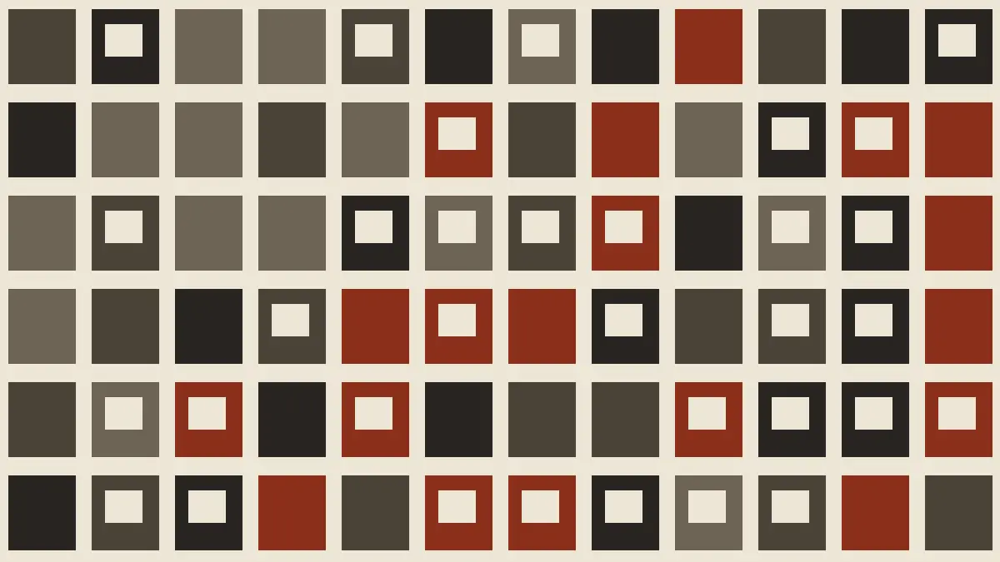

Cards, invitations and broadsides, set by hand
Quillfeather prints every job one sheet at a time, from metal and wood type on a press older than the building.

How a job is printed
We set the type, ink the plate, and pull each impression by hand. A short run takes a few days; a wedding suite takes a few weeks.
Every sheet is checked against the proof before it leaves the press.